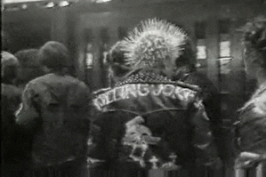
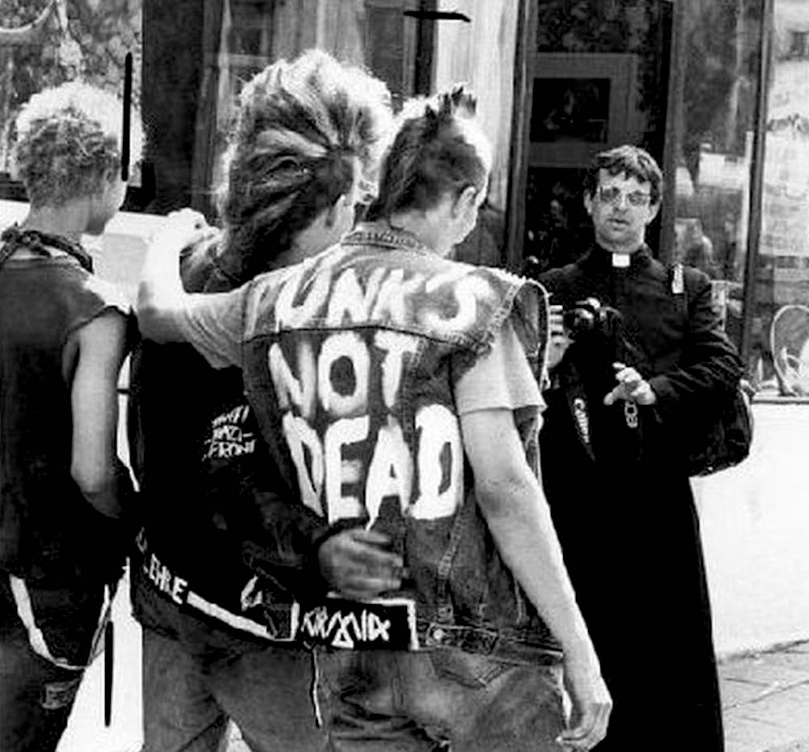
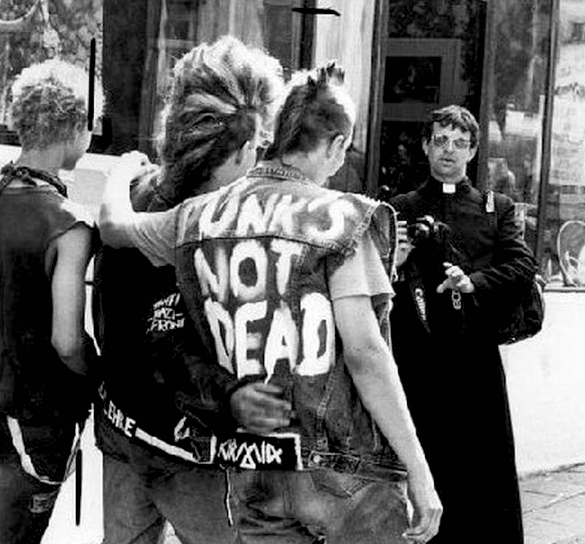

PUNK
NACIONAL

Historia del Punk Nacional
El punk en España surgió a finales de la década de los setenta, impulsado por el auge del movimiento punk en el mundo anglosajón y poco después
de la muerte del dictador Francisco Franco,
cuando se había iniciado ya la Transición hacia una democracia parlamentaria.
Sin embargo, a diferencia de lo ocurrido en el Reino Unido, donde emergió con enorme fuerza en pocos meses a partir de 1977, en España,
como en el resto de Europa,
se desarrolló más lentamente y en años inmediatamente posteriores.
Como primeros grupos que la crítica considera como pioneros del punk, surgen entre otros La Banda Trapera del Río y Kaka de Luxe,
y es ya a principios de los ochenta cuando surgen escenas musicales con multitud de bandas inspiradas en el movimiento,
con la llegada de la llamada Movida en Madrid, el Rock radical vasco, y el hardcore barcelonés.
El punk trajo consigo la filosofía del hágalo usted mismo, contribuyendo a la aparición de las primeras compañías discográficas independientes,
radios libres y fanzines en diferentes puntos del país.
A los problemas con las ventas se unía la reticencia de las discográficas establecidas a publicar un material semejante, tal y como ocurriera anteriormente en el Reino Unido,
donde muchos grupos tuvieron al principio que editar en sellos independientes.
La negativa de las discográficas se debía tanto a los contenidos como a la desconfianza que inspiraban en los artistas estrella de las compañías,
que en caso de proceder del rock se identificaban más bien con la escena underground (conocida como "el Rollo" o "el rollo enmascarado")
que miraba al punk con hostilidad o desprecio,
en pocos casos se avinieron a colaborar musicalmente con los recién llegados.
 
